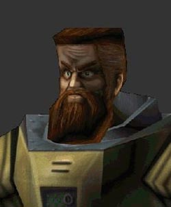
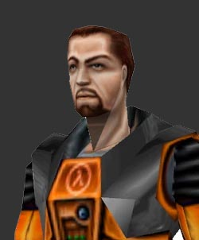
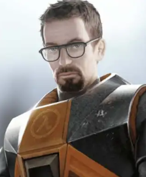
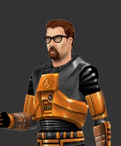
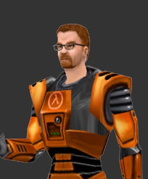
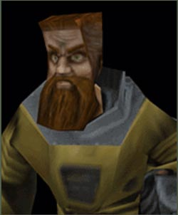
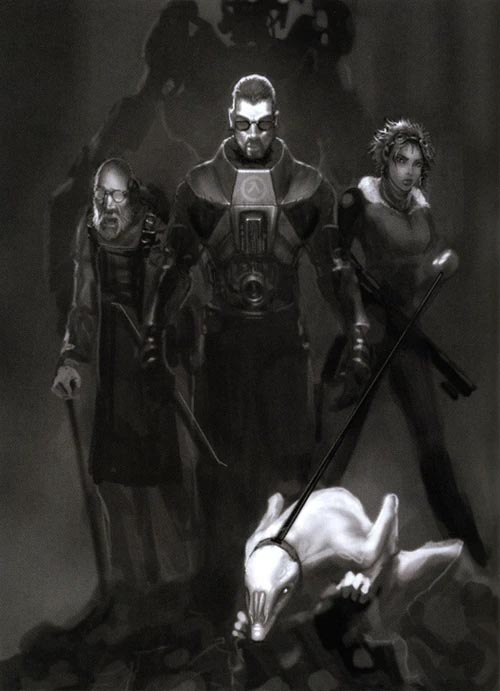

KİM BU GORDON FREEMAN?
Gordon Freeman, Half-Life serisinin ana karakteridir. Massachusetts Teknoloji Enstitüsü (M.I.T)'den Mezun olup 1997 Yılında Innsbruck Üniversitesi'nde Ziyaretçi Araştırma Görevlisi olarak çalışırken kendisine Akıl Hocası Isaac Kleiner'ın Çalıştığı Black Mesa Araştırma Tesisinden İş Teklifi gelmesi üzerine Black Mesa'da çalışmaya başlamıştır.
Half-Life
Gordon Freeman 16 Mayıs 200X Sabahı Seviye 3 Yurtlarındaki odasından ayrılarak 08:47'de Sektör C'deki Anormal Materyaller Laboratuvarına gitmek üzere Black Mesa Tren sistemine bindi.
İşe 30 dakika geç kalan Freeman laboratuvara adımını atar atmaz kendisine tehlike giysisini giyip Antikütle Spektrometresinin de içinde olduğu deney odasına gitmesi gerektiği söylendi. Freeman Deney Odasına girdi, merdivenleri çalıştırıp rotorları aktive etti daha sonrasında Xen'den getirilen GG-3883 isimli Xenium'u Makineye iterek Rezonans Çağlayanına sebep oldu
Hükümetin Bu hamlesinden sonra Freeman kendisini bir ateş üçgeninin tam ortasında buldu:
Bir tarafta Portal Fırtınaları yüzünden Xen'den gelen Xen canlıları
Bir tarafta tesiste saklanmaya çalışan personeller
Bir tarafta da ABD Hükümetinin herşeyi örtbas etmek için gönderdiği H.E.C.U Askerleri
Tüm bunlarla mücadele ederken Black Mesa'nın hiç bilmediği taraflarını gördü. Lambda Kompleksteki bilim adamları ona Portalların Dünyadan kapatılamayacağını çünkü diğer tarafta çok güçlü bir canlının onları engellidiğini bu yüzden kendisinin o canlıyı öldürmek için Xen'e gitmesi gerektiğini söylerler.
Freeman Lambda Kompleksten açılan bir Portalla Xen'e geçiş yapar
Xende bir yolculuk geçirditken sonra Nihilanth adındaki o canlıyla tanışır ve onu öldürür.
Freeman bir anda kendisini uzak bir xen adasında bulur ve zaman birden onun için işlevini yitirir. karşısındaysa tüm yolculuğu boyunca kendisini izleyen G-Man vardır.
G-Man Freeman'a bir iş teklifinde bulunur kabul etmesi karşılığında kendisini zamandan ve mekandan yoksun bir bekleyişe alacağını söyler. aksi halde kendisini tüm bu mücadelesinden çok daha zor hatta kendi deyimiyle "Kazanılma İhtimali" olmayan bir mücadeleye sokacağını söyler. Freeman mecburiyetten bu teklifi kabul eder ve Freeman'ın hikayesi bu noktada duraksar.
Half-Life 2
Freeman, G-Man tarafından zamanın dışında bir durumda tutulurken. Dünya bu süreçte Combine adı verilen başka bir evrenden gelen ve son derece gelişmiş bir imparatorluk tarafından işgal edilmiştir. Combine, insanlık direncini kırmış, dünyadaki tüm kaynakları sömürmeye başlamış ve şehirleri baskıcı bir şekilde yeniden organize etmiştir. G-Man, Gordon’ı bu yeni düzene uyandırdığında, o artık sadece bir bilim insanı değil, aynı zamanda Yanlış Yerdeki Doğru Kişi olmuştur...
Half-Life 2’nin başında, Gözlerini 17.Şehirde açan Freeman burada eski dostlarıyla – Dr. Isaac Kleiner, Barney Calhoun ve Eli Vance – yeniden bağlantı kurar. Freeman ve Eli Vance'in kızı Alyx'in insanlığın combine'dan gizlice inşa ettiği gizli bir araştırma merkezi olan Black Mesa East'e ışınlanmaları gereklidir. Alyx başarılı bir şekilde ışınlanır ama Freeman Dr. Kleiner'ın headcrab'i Lamar makineye atladığı için ışınlanamaz... O andan itibaren, Freeman istemeden de olsa Combine'a karşı büyüyen direnişin sembolü hâline gelecektir.
ve insanlığın direnişinde önemli bir rol oynayacaktır.
Half-Life yapım aşamasındayken ana karakterin isminin belirlenme aşamasında Gordon Freeman ismi Ünlü Fizikçi Freeman Dyson'dan ilham alınarak türetilmiştir. Başlanıgçta Freeman için düşünülen model günümüzdekinden çok farklı bir yapıya sahipti. Gordon'ın bu versiyonu gri ve yeşil renklerden oluşan garip bir H.E.V giysisi giymekteydi. bir motorcuyu andırdığı için hayranlar tarafından Ivan The Spacebiker takma adı verildi.



Valve, Half-Life’ın temasının daha ciddi ve bilimsel bir yönde olmasını amaçlıyordu. Ivan’ın çılgın görünümü oyunun temasına fazla uymuyordu. Bu nedenle Ivan’ın yerini, gözlüklü, daha modern ve canlı renkler içeren H.E.V giysili ve keçi sakallı bir teorik fizikçi olan günümüzdeki model aldı. Freeman daha sıradan bir karakter olarak, oyuncunun kendini yerine koyabileceği bir "sessiz kahraman" formuna uyarlandı.


Half-Life'ın yayınlanmasından sonra çeşitli platformlara portları da yayınlandı bu platformların çoğunda Gordon Freeman orijinal modelinden farklı bir modele sahipti Playstation 2 Modeli PC'ye göre daha HD tasarlanmıştı ayrıca Dreamcast platformu için port yapılırken yine farklı bir model daha tasarlandı ancak port'un iptali sonrası bu model tarihin tozlu raflarında yerini aldı.

Half-Life'ın 25.Yıl Güncellemesiyle birlikte Valve Ivan takma adlı bu eski modeli oyunun multiplayer modunda oyuncuların oynayabilmesi için oyuna ekledi ayrıca renkleri de değiştirilebilir hale getirildi.
Half-Life 2 BETA
Half-Life 2'nin geliştirilme sürecinde oyunun daha karanlık olması hedeflendiği için bu sefer karanlık bir Freeman tipi seçilmişti
Bu görsel, Half-Life 2'nin erken geliştirme aşamasında tasarlanmış olan Freeman modelini göstermektedir.
Valve, final sürümüne kadar birçok tasarım değişikliğine gitmiştir. Bu model, 2003’te Axel Gembe tarafından sızdırılan beta sürümde görülmektedir.
Resimde Freeman ortadadır, Solda Captain Vance (Günümüzde Eli Vance), Sağda ise Alyx Vance yer almaktadır.
Freeman Half-Life 1'deki Formunun aksine daha karanlık bir modele sahiptir. Ama bu Sonradan değiştirilmiştir.